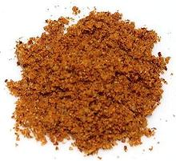

 |
Achar MasalaIndia - Achar Masala | ||||
| Makes: Effort: Sched: DoAhead: |
1 cup ** 45 min Yes |
Achar Masala is a pickling spice much used in India (and variously made). It is used for many pickles, but also as a masala for stews. | |||
|
|
13 ------- 1-1/2 1/4 1/4 2 1 1/2 ------- 1/3 1 1/8 1/2 |
--- T c c T t T --- c t t T |
Kashmiri Chilis (1) -- Toast Coriander Seed Cumin Seed Fennel Seed Rai Kura (2) Fenugreek Seed Nigella (kalonji) ---------- Salt Turmeric Asafetida (3) Amchoor powder (4) |
Important! For Indian pickles, crush toasted spices fairly coarse in a mortar - also see Pickles. For Achari stews, grind the spices fine. Make: - (45 min - 30 min with Chili Powder)
|